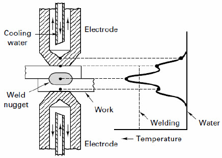
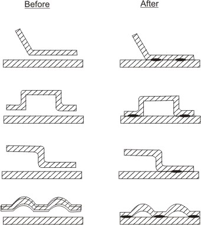
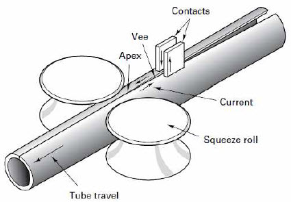

In resistance welding, coalescence is produced by localized heat generated through a resistance to the flow of electric current through the two members to be joined. This is accomplished by clamping two or more sheets of metal between copper electrodes and then passing an electrical current through them.
The assembly heats up, and forging pressure is applied by the clamping setup through the electrodes. No fluxes or filler metals are used.
Figure 1: The basic resistance welding circuit

Figure 2: The desired temperature distribution across the electrodes and workpieces during resistance welding
Concept of resistance welding can be explained in following manner. High current at a low voltage flows through the circuit and is in accordance with Ohm's law that is given by:

Where, I is the current in amperes, E is the voltage in volts, and R is the resistance of the material in ohms.
The total energy is expressed by the formula:
Where, H is heat energy, T is the time in seconds during which current flows in the circuit.
Combining above two equations gives:
For practical reasons a factor, which relates to heat losses should be included; therefore, the actual resistance welding formula is:
Where, I is current squared in amperes, R is the resistance of the work in ohms, T is the time of current flow in seconds, and K represents the heat losses through radiation and conduction.
Note: From the above formulation it can be concluded that welding heat is proportional to the square of the welding current. If the current is doubled, the heat generated is quadrupled. Welding heat is proportional to the total time of current flow, thus, if current is doubled, the time can be reduced considerably. The welding heat generated is directly proportional to the resistance and is related to the material being welded and the pressure applied.
A resistance-welding machine has three principal elements:
(1) An electrical circuit with a welding transformer and a current regulator, and a secondary circuit, including the electrodes that conduct the welding current to the work.
(2) A mechanical system consisting of a machine frame and associated mechanisms to hold the work and apply the welding force.
(3) The control equipment (timing devices) to initiate the time and duration of the current flow. This equipment may also control the current magnitude, as well as the sequence and the time of other parts of the welding cycle.
a. No filler material or flux is used.
b. It uses non-consumable, low resistance copper alloy electrodes.
c. Both heat and pressure are utilized.
d. Pressure applied initially to hold the work piece.
e. Pressure increased when the proper temperature has been obtained.
f. Process control can be mechanized / computerized for mass production.
g. The magnitude of the current in resistance welding may be as high as 10,0000A but the voltage is in the range of 0.5V to 10V.
Resistance welding process depends on following three factors
a. Amount of current that passes through the two members to be joined.
b. The pressure that the electrodes transfer to the two members to be joined.
c. The time the current flows through the two members to be joined.
Advantages resistance welding process
a. Welds made by this process are made very quickly as resistance welding operations are automatic.
b. Produce a high volume of work at high speeds.
c. Does not require filler materials.
d. There are no limitations on welding position.
e. This process works well with robotics.
Disadvantages resistance welding process
a. Difficulties may be encountered when welding certain metals in thicker sections. Some metals require heat treatment after welding for satisfactory mechanical properties.
b. Metals that have a lower resistivity but a higher thermal conductivity will be slightly more difficult to weld.
c. The process requires special fixtures and automatic handling equipment.
Applications of resistance welding process
a. The automotive industry is the major user of the resistance welding processes, followed by the appliance industry.
b. Resistance welding is used by many industries manufacturing a variety of products made of thinner gauge metals.
c. Resistance welding is also used in the steel industry for manufacturing pipe, tubing and smaller structural sections.
d. Resistance welding is used primarily in the mass production industries where long production runs and consistent conditions can be maintained.
4.3.1 Spot welding
In spot welding, the tips of the two solid cylindrical electrodes are placed on either side of the lap joint of two sheet metals to be joined, and a high current is passed across the point of contact. The heat generated at the point of contact will melt the metals locally at the point of contact. After the current is switched off, the
melt is allowed to solidify under the pressure applied by the electrode tip forming the joint, which creates a small circular weld. Spot welding is primarily used for joining parts that normally upto 3 mm thickness. Spot-weld diameters range from 3mm to 12.5mm in diameter. The current ranges from 3000A to 40,000A.

Figure 3: Spot welding setup

Figure 4: Sample shapes joined by spot welding setup
High speed process and capable of automation for mass production of sheet metal assemblies
Process can be incorporated in assembly line
Needs less skill
Less warping and distortion in welded parts
Welded products are uniform
Disadvantages of spot welding
Parts once spot welded can not be disassembled
Setup is quite costly
Spot welds have less tensile strength
High power requirement
Applications of spot welding
Spot welding is especially useful in fabricating sheet metal parts especially in automobile and aircraft industry.
4.3.2 Seam welding
In seam welding the cylindrical electrodes of spot welding are replaced by electrode wheels. The process is shown in Figure below. The metals to be welded are drawn between the rollers. The resulting weld is a series of overlapping spot welds made progressively along a joint. With a continuous AC power supply, the electrically conducting electrode wheels produce continuous of the two parts whenever the current reaches sufficiently high level in the ac cycle, resulting spot welds at regular intervals.

Figure 5: Seam welding setup

Figures 6: Fabrication of tube from sheet metal by seam welding
A series of overlapping spot welds.
High frequency current heats the adjoining surfaces of metal workpieces.
Heated surfaces pressed together to form a welded joint
Used extensively in producing pipes
Advantages of seam welding
Gas tight joints can be obtained
A single weld or multiple parallel seams can be produced.
Needs no edge preparation
Disadvantages of seam welding
Seam welding can only be performed along a straight or uniformly curved line.
Thickness of more then 3 mm is difficult to weld.
Strength of seam welded lap joints is lower than those of fusion welded butt joints.
Application of seam welding
Lapped and flanged joints in cans, buckets, tanks, mufflers, exhaust systems, drip-mouldings on car body shells are commonly welded by this process.
4.3.3 Projection welding
In this process coalescence is produced by the heat obtained from resistance to the flow of electric current through the workpieces, which are held together under pressure by electrodes. The resulting welds are localized at predetermined points by the design of the parts to be welded. This localization is usually accomplished by projections, embossments, or intersections.

Figure 7: Projection Welding
Number of weld can be made simultaneously in one cycle
A better heat balance can be obtained by this process.
Less chance of shrinkage and distortion around the weld zone
Less overlap and closer weld spacing are possible.
Projection welds can be made in thick work pieces which can not be
accomplished by spot welding
Disadvantages of projection welding
Needs precise alignment of the welding dies to equalize the electrode force
and welding current
For multiple wells higher capacity equipment is needed.
Applications of projection welding
Projection welding is carried for steel radiator coupling elements, brake shoes, tin-plate tank handles.
| Lecture 3 | Lecture 5 |